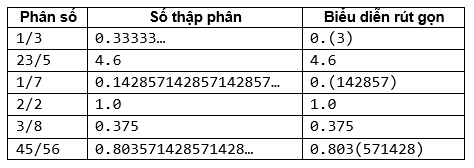

Một phân số khi viết dưới dạng số thực thì nó sẽ là một số thập phân hữu hạn hay một số thập phân vô hạn tuần hoàn. Khi biểu diễn một số thập phân vô hạn tuần hoàn, người ta dùng cặp dấu ngoặc để đánh dấu phần thập phân tuần hoàn (phần được lặp lại với số lần lặp không xác định). Một số ví dụ:

Cho tử số và mẫu số của một phân số, bạn hãy cho biết biểu diễn rút gọn của phân số đó.
Dữ liệu nhập:
- Gồm hai số nguyên t và m là tử số và mẫu số (1 ≤ t, m ≤ 1.000)
Dữ liệu xuất:
- Chuỗi biểu diễn rút gọn của phân số tương ứng. Phân cách giữa phần nguyên và phần thập phân là dấu chấm (.)